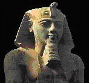
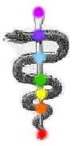

|  | This meditation, like the serpent meditation, is very powerful and should only be practiced by those who are advanced meditators and have strong enough chakras. Azazel helped to revise this meditation with the addition of the extended serpent. |  |
- Sit with your spine straight
- Focus on your base chakra, glowing with a powerful vibrant red-gold.
- Visualize the serpent glowing with the brilliant light and power as well, lighting up the base chakra to white-gold like the sun, and exiting the base chakra from the left side.
- The serpent curves outwards to the left side of the body before it curves back to the right to enter the 2nd sacral chakra on the left side. When it enters the sacral chakra, visualize this chakra lighting up in orange-gold.
- It emerges from the right side of the 2nd chakra, curving out and then back in to the left where it enters the 3rd solar plexus chakra from the right side, lighting it up to white-gold and empowering it.
- Emerging on the left side of the 3rd chakra, it curves out and then back in to the right to the 4th heart chakra where it enters on the left side and lights it up with green-gold energy.
- Emerging on the right side of the 4th chakra, arcing out and then back in to the left to enter the 5th throat chakra on the right side, lighting it up with bright blue energy and empowering it.
- Emerging from the left of the throat chakra, the serpent again arcs out to the left, then in to the right again where it enters the 6th chakra behind the 3rd eye from the left side. Light up this chakra with brilliant blue-violet energy, charging it and empowering it.
- The serpent emerges from the front of the 6th chakra. It will take an alternative route. Visualize the serpent entering the 3rd eye from the rear and exiting from the front of the third eye. Extend the serpent about one foot beyond your third eye and try to feel the projection from your aura.
- Retract the serpent back into your third eye and back into your 6th chakra, then begin the path of descending.
- Direct the serpent to enter the right side of your throat chakra, lighting it up and it emerges from the left side of the throat chakra, arcing out and in again to enter the heart chakra on the left side, lighting it up.
- It emerges from the heart chakra on the right side, arcing out, then in again to enter the solar plexus chakra on the right side, lighting it up and empowering it.
- It then emerges on the left side of the solar chakra, arcing out and then in again to enter the sacral chakra on the left side, lighting it up and empowering it.
- After lighting up the sacral chakra, it emerges through the right side and again arcs out and in again before it returns to the base chakra, entering it on the right side, lighting it up with brilliant light and energy. Spend a few moments meditating on your base chakra and empowering it with the brilliant light and energy.
This can be repeated. It is extremely powerful.
© Copyright 2005, Joy of Satan Ministries;
Library of Congress Number: 12-16457

BACK TO MAIN POWER MEDITATION PAGE